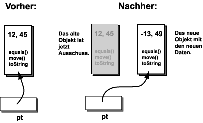

Kann ein Konstruktor verwendet werden, um die Daten innerhalb eines Objekts zu ändern?
Antwort:
Nein. Ein Konstruktor erzeugt immer ein neues Objekt.
(Er kann die Daten eines existierenden Objekts erhalten,
aber er wird ein völlig neues Objekt erzeugen, das ein anderes Stück Arbeitsspeicher verwenden wird.)
Gefährlich ähnliches Programm
Hier ist noch einmal das Beispielprogramm. Es wurde modifiziert, um ein zweites Point-Objekt zu erzeugen:
import java.awt.*;
class DatenAendern2
{
public static void main ( String arg[] )
{
Point pt = new Point( 12, 45 ); // ein Point-Objekt konstruieren
System.out.println( "Anfangswerte: " + pt );
pt = new Point( -13, 49 ) ; // ein neues Point-Objekt konstruieren
System.out.println( "Endwerte: " + pt );
}
}
Hier ist eine Abbildung, die die Situation vor und nach der zweiten Zuweisungsanweisung zeigt:

In der Abbildung "Nachher" wird das erste Objekt grau dargestellt, um hervorzuheben,
dass es jetzt Ausschuss ist.
Die Referenzvariable pt verweist auf das neu erzeugte Objekt.